Conductores y Aisladores
Introducción
A estas alturas ya deberías ser consciente de la correlación entre la conductividad eléctrica y ciertos tipos de materiales. Los materiales que permiten el paso fácil de electrones libres se denominanconductores, mientras que aquellos materiales que impiden el paso de electrones libres se denominanaisladores.
Desafortunadamente, las teorías científicas que explican por qué ciertos materiales conducen y otros no son bastante complejas y se basan en explicaciones de la mecánica cuántica sobre cómo se organizan los electrones alrededor de los núcleos de los átomos. Contrariamente al conocido modelo "planetario" de electrones que giran alrededor del núcleo de un átomo como trozos de materia bien definidos en órbitas circulares o elípticas, los electrones en "órbita" en realidad no actúan como trozos de materia en absoluto. Más bien, exhiben las características tanto de partículas como de ondas, y su comportamiento está limitado por su ubicación dentro de distintas zonas alrededor del núcleo denominadas "capas" y "subcapas". Los electrones pueden ocupar estas zonas sólo en un rango limitado de energías dependiendo de la zona particular y de qué tan ocupada esté esa zona con otros electrones. Si los electrones realmente actuaran como pequeños planetas mantenidos en órbita alrededor del núcleo por atracción electrostática, y sus acciones estuvieran descritas por las mismas leyes que describen los movimientos de los planetas reales, no podría haber una distinción real entre conductores y aislantes, y los enlaces químicos entre átomos no existirían como existen ahora. Es la naturaleza discreta y "cuantificada" de la energía y la ubicación de los electrones descrita por la física cuántica lo que da regularidad a estos fenómenos.
Cuando un electrón es libre de asumir estados de energía más altos alrededor del núcleo de un átomo (debido a su ubicación en una "capa" particular), puede ser libre de separarse del átomo y formar parte de una corriente eléctrica a través de la sustancia. Sin embargo, si las limitaciones cuánticas impuestas a un electrón le niegan esta libertad, se considera que el electrón está "atado" y no puede separarse (al menos no fácilmente) para constituir una corriente. El primer escenario es típico de materiales conductores, mientras que el segundo es típico de materiales aislantes.
Algunos libros de texto le dirán que la conductividad o no conductividad de un elemento está determinada exclusivamente por el número de electrones que residen en la "capa" exterior de los átomos (llamada capa).valenciacapa), pero esto es una simplificación excesiva, como lo confirmará cualquier examen de la conductividad versus los electrones de valencia en una tabla de elementos. La verdadera complejidad de la situación se revela aún más cuando se considera la conductividad de las moléculas (colecciones de átomos unidos entre sí por la actividad electrónica).
Un buen ejemplo de esto es el elemento carbono, que comprende materiales de conductividades muy diferentes: grafito y diamante. El grafito es un buen conductor de la electricidad, mientras que el diamante es prácticamente un aislante (lo más extraño aún es que técnicamente está clasificado como unsemiconductor, que en su forma pura actúa como aislante, pero puede conducir bajo altas temperaturas y/o bajo la influencia de impurezas). Tanto el grafito como el diamante están compuestos exactamente por el mismo tipo de átomos: carbono, con 6 protones, 6 neutrones y 6 electrones cada uno. La diferencia fundamental entre el grafito y el diamante es que las moléculas de grafito son agrupaciones planas de átomos de carbono, mientras que las moléculas de diamante son agrupaciones tetraédricas (en forma de pirámide) de átomos de carbono.
Si los átomos de carbono se unen a otros tipos de átomos para formar compuestos, la conductividad eléctrica vuelve a alterarse. El carburo de silicio, un compuesto de los elementos silicio y carbono, exhibe un comportamiento no lineal: ¡su resistencia eléctrica disminuye con el aumento del voltaje aplicado! Los compuestos de hidrocarburos (como las moléculas que se encuentran en los aceites) tienden a ser muy buenos aislantes. Como puede ver, un simple recuento de los electrones de valencia de un átomo es un mal indicador de la conductividad eléctrica de una sustancia.
Todos los elementos metálicos son buenos conductores de la electricidad debido a la forma en que los átomos se unen entre sí. Los electrones de los átomos que componen una masa de metal están tan desinhibidos en sus estados energéticos permisibles que flotan libremente entre los diferentes núcleos de la sustancia, fácilmente motivados por cualquier campo eléctrico. De hecho, los electrones son tan móviles que a veces los científicos los describen comogas de electrones, o incluso unmar de electronesen el que descansan los núcleos atómicos. Esta movilidad de electrones explica algunas de las otras propiedades comunes de los metales: buena conductividad térmica, maleabilidad y ductilidad (fácilmente moldeables en diferentes formas) y un acabado brillante cuando están puros.
Afortunadamente, la física detrás de todo esto es en gran medida irrelevante para nuestros propósitos aquí. Baste decir que algunos materiales son buenos conductores, otros son malos conductores y otros se encuentran en un punto intermedio. Por ahora basta con entender simplemente que estas distinciones están determinadas por la configuración de los electrones alrededor de los átomos constituyentes del material.
Un paso importante para lograr que la electricidad cumpla nuestras órdenes es poder construir caminos para que los electrones fluyan con cantidades controladas de resistencia. También es de vital importancia que seamos capaces de evitar que los electrones fluyan hacia donde no queremos, mediante el uso de materiales aislantes. Sin embargo, no todos los conductores son iguales, ni tampoco todos los aislantes. Necesitamos comprender algunas de las características de los conductores y aisladores comunes y poder aplicar estas características a aplicaciones específicas.
Casi todos los conductores poseen una resistencia determinada y medible (tipos especiales de materiales llamadossuperconductoresno poseen absolutamente ninguna resistencia eléctrica, pero estos no son materiales comunes y deben mantenerse en condiciones especiales para que sean superconductores). Normalmente, suponemos que la resistencia de los conductores de un circuito es cero y esperamos que la corriente pase a través de ellos sin producir ninguna caída de voltaje apreciable. En realidad, sin embargo, casi siempre habrá una caída de voltaje a lo largo de las vías conductoras (normales) de un circuito eléctrico, ya sea que queramos que haya una caída de voltaje o no:
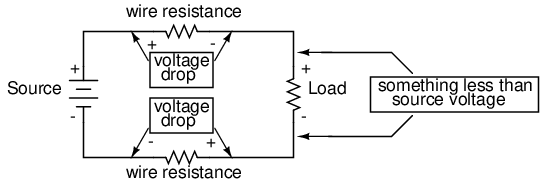
Para calcular cuáles serán estas caídas de voltaje en cualquier circuito en particular, debemos poder determinar la resistencia del cable común, conociendo el tamaño y el diámetro del cable. Algunas de las siguientes secciones de este capítulo abordarán los detalles de cómo hacer esto.
- REVISAR:
- La conductividad eléctrica de un material está determinada por la configuración de los electrones en los átomos y moléculas de ese material (grupos de átomos unidos).
- Todos los conductores normales poseen resistencia hasta cierto punto.
- Los electrones que fluyen a través de un conductor con (cualquier) resistencia producirán una cierta cantidad de caída de voltaje a lo largo de ese conductor.
Conductor size
Debería ser un conocimiento de sentido común que los líquidos fluyen a través de tuberías de gran diámetro más fácilmente que a través de tuberías de pequeño diámetro (si desea un ejemplo práctico, intente beber un líquido a través de pajitas de diferentes diámetros). El mismo principio general se aplica al flujo de electrones a través de conductores: cuanto más amplia sea la sección transversal (grosor) del conductor, más espacio para que los electrones fluyan y, en consecuencia, más fácil será que se produzca el flujo (menos resistencia).
El cable eléctrico suele tener una sección transversal redonda (aunque existen algunas excepciones únicas a esta regla) y viene en dos variedades básicas: sólido y trenzado. El alambre de cobre sólido es tal como suena: un solo hilo sólido de cobre a lo largo de toda la longitud del alambre. El cable trenzado se compone de hebras más pequeñas de alambre de cobre sólido entrelazadas para formar un conductor único y más grande. El mayor beneficio del cable trenzado es su flexibilidad mecánica, ya que puede resistir dobleces y torsiones repetidas mucho mejor que el cobre sólido (que tiende a fatigarse y romperse con el tiempo).
El tamaño del cable se puede medir de varias formas. Podríamos hablar del diámetro de un alambre, pero como realmente es la sección transversaláreaLo que más importa con respecto al flujo de electrones, es mejor que designemos el tamaño del cable en términos de área.
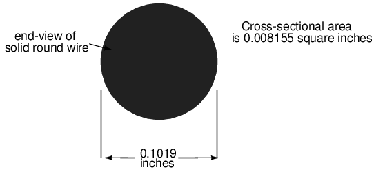
La imagen de la sección transversal del cable que se muestra arriba, por supuesto, no está dibujada a escala. El diámetro se muestra como 0,1019 pulgadas. Calcular el área de la sección transversal con la fórmula Área = πr2, obtenemos un área de 0,008155 pulgadas cuadradas:
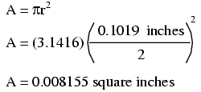
Estos son números bastante pequeños con los que trabajar, por lo que los tamaños de los cables a menudo se expresan en medidas de milésimas de pulgada, omilésimas de pulgada. Para el ejemplo ilustrado, diríamos que el diámetro del alambre era 101,9 mils (0,1019 pulgadas por 1000). También podríamos, si quisiéramos, expresar el área del alambre en la unidad de mils cuadrados, calculando ese valor con la misma fórmula del área del círculo, Área = πr2:
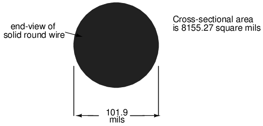
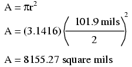
Sin embargo, los electricistas y otras personas que suelen preocuparse por el tamaño de los cables utilizan otra unidad de medida de área diseñada específicamente para la sección transversal circular del cable. Esta unidad especial se llamamilésimas circulares(a veces abreviadocmil). El único propósito de tener esta unidad de medida especial es eliminar la necesidad de invocar el factor π (3,1415927...) en la fórmula para calcular el área, más la necesidad de calcular el cable.radiocuando te han dadodiámetro. La fórmula para calcular el área en mil circulares de un alambre circular es muy simple:
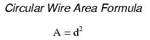
Porque esta es una unidad deáreamedición, el poder matemático de 2 todavía está vigente (duplicar el ancho de un círculosiemprecuadruplicar su área, sin importar qué unidades se utilicen, o si el ancho de ese círculo se expresa en términos de radio o diámetro). Para ilustrar la diferencia entre medidas en mils cuadrados y medidas en mils circulares, compararé un círculo con un cuadrado, mostrando el área de cada forma en ambas unidades de medida:
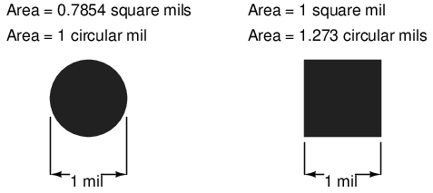
Y para otro tamaño de cable:
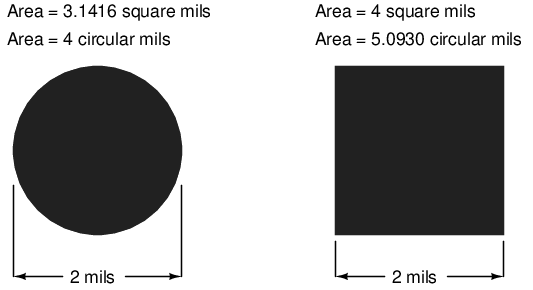
Obviamente, el círculo de un diámetro dado tiene menos área de sección transversal que un cuadrado de ancho y alto igual al diámetro del círculo: ambas unidades de medida de área reflejan eso. Sin embargo, debe quedar claro que la unidad "mil cuadrada" está realmente diseñada para la determinación conveniente del área de un cuadrado, mientras que "mil circular" está diseñada para la determinación conveniente del área de un círculo: es más sencillo trabajar con la fórmula respectiva para cada uno. Hay que entender que ambas unidades son válidas para medir el área de una forma, sin importar de qué forma sea. La conversión entre mils circulares y mils cuadrados es una relación simple: hay π (3,1415927...) mils cuadrados por cada 4 mils circulares.
Otra medida del área de la sección transversal del alambre es laindicador. La escala de calibre se basa en números enteros en lugar de pulgadas fraccionarias o decimales. Cuanto mayor sea el número de calibre, más delgado será el cable; cuanto menor sea el número de calibre, más grueso será el cable. Para aquellos familiarizados con las escopetas, esta escala de medición inversamente proporcional les resultará familiar.
La tabla al final de esta sección equipara el calibre con pulgadas de diámetro, mils circulares y pulgadas cuadradas para alambre sólido. Los tamaños más grandes de alambre llegan al final de la escala de calibre común (que naturalmente alcanza un valor máximo de 1) y están representados por una serie de ceros. "3/0" es otra forma de representar "000" y se pronuncia "triple deber". Una vez más, quienes estén familiarizados con las escopetas deberían reconocer la terminología, por extraña que parezca. Para hacer las cosas aún más confusas, hay más de un calibre "estándar" en uso en todo el mundo. Para el dimensionamiento de conductores eléctricos, elCalibre de alambre americano(AWG), también conocida comomarrón y afilado(B&S), es el sistema de medición elegido. En Canadá y Gran Bretaña, elCalibre de alambre estándar británico(SWG) es el sistema de medida legal para conductores eléctricos. Existen otros sistemas de calibre de alambre en el mundo para clasificar el diámetro del alambre, como elTalonescalibre del alambre de acero y elCalibre de alambre musical de acero(MWG), pero estos sistemas de medición se aplican al uso de cables no eléctricos.
El sistema de medición American Wire Gauge (AWG), a pesar de sus rarezas, fue diseñado con un propósito: por cada tres pasos en la escala de calibre, el área del cable (y el peso por unidad de longitud) aproximadamente se duplica. ¡Esta es una regla útil para recordar al realizar estimaciones aproximadas del tamaño de los cables!
For muyPara tamaños de alambre grandes (más gruesos que 4/0), el sistema de calibre de alambre generalmente se abandona para medir el área de la sección transversal en miles de mils circulares (MCM), tomando prestado el antiguo número romano "M" para denotar un múltiplo de "mil" delante de "CM" para "mils circulares". La siguiente tabla de tamaños de cables no muestra ningún tamaño mayor que el calibre 4/0, porquesólidoEl alambre de cobre resulta poco práctico de manipular en esos tamaños. En cambio, se prefiere la construcción con alambre trenzado.
Mesa de alambre de cobre sólido: a continuación
Soild copper wire table:
| Tamaño | Diámetro | transversal | área | Peso |
|---|---|---|---|---|
| AWG | pulgadas | cir. milésimas de pulgada | pulgadas cuadradas | libras/1000 pies |
| 4/0 | 0.4600 | 211,600 | 0.1662 | 640.5 |
| 3/0 | 0.4096 | 167,800 | 0.1318 | 507.9 |
| 2/0 | 0.3648 | 133,100 | 0.1045 | 402.8 |
| 1/0 | 0.3249 | 105,500 | 0.08289 | 319.5 |
| 1 | 0.2893 | 83,690 | 0.06573 | 253.5 |
| 2 | 0.2576 | 66,370 | 0.05213 | 200.9 |
| 3 | 0.2294 | 52,630 | 0.04134 | 159.3 |
| 4 | 0.2043 | 41,740 | 0.03278 | 126.4 |
| 5 | 0.1819 | 33,100 | 0.02600 | 100.2 |
| 6 | 0.1620 | 26,250 | 0.02062 | 79.46 |
| 7 | 0.1443 | 20,820 | 0.01635 | 63.02 |
| 7 | 0.1443 | 20,820 | 0.01635 | 63.02 |
| 8 | 0.1285 | 16,510 | 0.01297 | 49.97 |
| 9 | 0.1144 | 13,090 | 0.01028 | 39.63 |
| 10 | 0.1019 | 10,380 | 0.008155 | 31.43 |
| 11 | 0.09074 | 8,234 | 0.006467 | 24.92 |
| 12 | 0.08081 | 6,530 | 0.005129 | 19.77 |
| 13 | 0.07196 | 5,178 | 0.004067 | 15.68 |
| 14 | 0.06408 | 4,107 | 0.003225 | 12.43 |
| 15 | 0.05707 | 3,257 | 0.002558 | 9.858 |
| 16 | 0.05082 | 2,583 | 0.002028 | 7.818 |
| 17 | 0.04526 | 2,048 | 0.001609 | 6.200 |
| 18 | 0.04030 | 1,624 | 0.001276 | 4.917 |
| 19 | 0.03589 | 1,288 | 0.001012 | 3.899 |
| 20 | 0.03196 | 1,022 | 0.0008023 | 3.092 |
| 21 | 0.02846 | 810.1 | 0.0006363 | 2.452 |
| 22 | 0.02535 | 642.5 | 0.0005046 | 1.945 |
| 23 | 0.02257 | 509.5 | 0.0004001 | 1.542 |
| 23 | 0.02257 | 509.5 | 0.0004001 | 1.542 |
| 24 | 0.02010 | 404.0 | 0.0003173 | 1.233 |
| 25 | 0.01790 | 320.4 | 0.0002517 | 0.9699 |
| 26 | 0.01594 | 254.1 | 0.0001996 | 0.7692 |
| 27 | 0.01420 | 201.5 | 0.0001583 | 0.6100 |
| 28 | 0.01264 | 159.8 | 0.0001255 | 0.4837 |
| 29 | 0.01126 | 126.7 | 0.00009954 | 0.3836 |
| 30 | 0.01003 | 100.5 | 0.00007894 | 0.3042 |
| 31 | 0.008928 | 79.70 | 0.00006260 | 0.2413 |
| 32 | 0.007950 | 63.21 | 0.00004964 | 0.1913 |
| 33 | 0.007080 | 50.13 | 0.00003937 | 0.1517 |
| 34 | 0.006305 | 39.75 | 0.00003122 | 0.1203 |
| 35 | 0.005615 | 31.52 | 0.00002476 | 0.09542 |
| 36 | 0.005000 | 25.00 | 0.00001963 | 0.07567 |
| 37 | 0.004453 | 19.83 | 0.00001557 | 0.06001 |
| 38 | 0.003965 | 15.72 | 0.00001235 | 0.04759 |
| 39 | 0.003531 | 12.47 | 0.000009793 | 0.03774 |
| 40 | 0.003145 | 9.888 | 0.000007766 | 0.02993 |
| 41 | 0.002800 | 7.842 | 0.000006159 | 0.02374 |
| 42 | 0.002494 | 6.219 | 0.000004884 | 0.01882 |
| 43 | 0.002221 | 4.932 | 0.000003873 | 0.01493 |
| 44 | 0.001978 | 3.911 | 0.000003072 | 0.01184 |
Para algunas aplicaciones de alta corriente, se requieren tamaños de conductores que superan el límite de tamaño práctico del cable redondo. En estos casos, gruesas barras de metal sólido llamadasbarras colectorasSe utilizan como conductores. Las barras colectoras suelen estar hechas de cobre o aluminio y, en la mayoría de los casos, no están aisladas. Están físicamente sostenidos lejos de cualquier marco o estructura que los sujete mediante soportes aislantes. Aunque una sección transversal cuadrada o rectangular es muy común para la forma de barra colectora, también se utilizan otras formas. El área de la sección transversal de las barras colectoras generalmente se clasifica en términos de milésimas de pulgada circulares (¡incluso para barras cuadradas y rectangulares!), muy probablemente por la conveniencia de poder equiparar directamente el tamaño de las barras colectoras con el alambre redondo.
- REVISAR:
- Los electrones fluyen a través de cables de gran diámetro más fácilmente que los de pequeño diámetro, debido a la mayor sección transversal que tienen para moverse.
- En lugar de medir tamaños de alambre pequeños en pulgadas, a menudo se emplea la unidad de "mil" (1/1000 de pulgada).
- El área de la sección transversal de un cable se puede expresar en términos de unidades cuadradas (pulgadas cuadradas o mils cuadradas), mils circulares o escala de "calibre".
- Calcular el área de un cable de unidad cuadrada para un cable circular implica la fórmula del área del círculo:
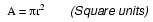
- Calcular el área de un alambre circular en mil para un alambre circular es mucho más simple, debido al hecho de que la unidad de "mil circular" se dimensionó solo para este propósito: eliminar los factores "pi" y d/2 (radio) en la fórmula.
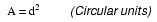
- Hay π (3,1416) milésimas cuadradas por cada 4 milésimas circulares.
- The indicadorEl sistema de dimensionamiento de cables se basa en números enteros; los números más grandes representan cables de área más pequeña y viceversa. Los cables de calibre superior a 1 se representan con ceros: 0, 00, 000 y 0000 (que se pronuncian como "deber simple", "deber doble", "deber triple" y "deber cuádruple").
- Los tamaños de cables muy grandes están clasificados en miles de mils circulares (MCM), típicos de barras colectoras y tamaños de cables superiores a 4/0.
- Barras colectorasSon barras sólidas de cobre o aluminio que se utilizan en la construcción de circuitos de alta corriente. Las conexiones realizadas a las barras colectoras suelen estar soldadas o atornilladas, y las barras colectoras suelen estar desnudas (sin aislamiento), sostenidas lejos de marcos metálicos mediante el uso de separadores aislantes.
Amperaje del conductor
Cuanto más pequeño sea el cable, mayor será la resistencia para cualquier longitud dada, siendo todos los demás factores iguales. Un cable con mayor resistencia disipará una mayor cantidad de energía térmica para cualquier cantidad de corriente dada, siendo la potencia igual a P=I2R.
La potencia disipada en una resistencia se manifiesta en forma de calor, y el calor excesivo puede dañar un cable (¡sin mencionar los objetos cerca del cable!), especialmente considerando el hecho de que la mayoría de los cables están aislados con una capa de plástico o caucho, que puede derretirse y quemarse. Por lo tanto, los cables delgados tolerarán menos corriente que los cables gruesos, en igualdad de condiciones con todos los demás factores. El límite de corriente de un conductor se conoce como suampacidad.
Principalmente por razones de seguridad, se han establecido ciertos estándares para el cableado eléctrico en los Estados Unidos y se especifican en el Código Eléctrico Nacional (NEC). Las tablas típicas de ampacidad de cables de NEC mostrarán las corrientes máximas permitidas para diferentes tamaños y aplicaciones de cables. Aunque el punto de fusión del cobre impone teóricamente un límite a la ampacidad del cable, los materiales comúnmente empleados para aislar conductores se funden a temperaturas muy por debajo del punto de fusión del cobre, por lo que las clasificaciones prácticas de ampacidad se basan en los límites térmicos.del aislamiento. La caída de voltaje como resultado de una resistencia excesiva del cable también es un factor al dimensionar los conductores para su uso en circuitos, pero esta consideración se evalúa mejor a través de medios más complejos (que cubriremos en este capítulo). Se muestra, por ejemplo, una tabla derivada de un listado NEC:
Ampacidades del alambre de cobre: a continuación
Ampacities of copper wire, in free air at 30o C:
| TIPO DE AISLAMIENTO: | |||
|---|---|---|---|
| RUW, T. | THW, THWN | FEP, FEPB | |
| TW | RUH | THHN, XHHW | |
| Tamaño | Clasificación de corriente | Clasificación de corriente | Clasificación de corriente |
| AWG | @ 60 grados C | @ 75 grados C | @ 90 grados C |
| 20 | *9 | *12.5 | |
| 18 | *13 | 18 | |
| 16 | *18 | 24 | |
| 14 | 25 | 30 | 35 |
| 12 | 30 | 35 | 40 |
| 10 | 40 | 50 | 55 |
| 8 | 60 | 70 | 80 |
| 6 | 80 | 95 | 105 |
| 4 | 105 | 125 | 140 |
| 2 | 140 | 170 | 190 |
| 1 | 165 | 195 | 220 |
| 1/0 | 195 | 230 | 260 |
| 2/0 | 225 | 265 | 300 |
| 3/0 | 260 | 310 | 350 |
| 4/0 | 300 | 360 | 405 |
* = valores estimados; Normalmente, estos tamaños de cables pequeños no se fabrican con estos tipos de aislamiento.anterior.
Observe las diferencias sustanciales de ampacidad entre cables del mismo tamaño con diferentes tipos de aislamiento. Esto se debe, nuevamente, a los límites térmicos (60o, 75o, 90o) de cada tipo de material aislante.
Estas clasificaciones de ampacidad se dan para conductores de cobre en "aire libre" (circulación de aire típica máxima), a diferencia de cables colocados en conductos o bandejas de alambre. Como notará, la tabla no especifica ampacidades para tamaños de cables pequeños. Esto se debe a que el NEC se ocupa principalmente del cableado eléctrico (grandes corrientes, cables grandes) en lugar de los cables comunes a los trabajos electrónicos de baja corriente.
Hay significado en las secuencias de letras utilizadas para identificar los tipos de conductores, y estas letras generalmente se refieren a las propiedades de las capas aislantes del conductor. Algunas de estas letras simbolizan propiedades individuales del cable, mientras que otras son simplemente abreviaturas. Por ejemplo, la letra "T" por sí sola significa "termoplástico" como material aislante, como en "TW" o "THHN". Sin embargo, la combinación de tres letras "MTW" es una abreviatura deAlambre para máquina herramienta, un tipo de cable cuyo aislamiento está hecho para ser flexible para su uso en máquinas que experimentan movimientos o vibraciones importantes.
Códigos de aislamiento de cables: a continuación
Soild copper wire table:
| Código | Material aislante |
|---|---|
| C | Algodón |
| FEP | Etileno propileno fluorado |
| MI | Mineral (óxido de magnesio) |
| PFA | perfluoroalcoxi |
| R | Caucho (a veces neopreno) |
| S | "Goma" de silicona |
| SA | Silicona-amianto |
| T | Termoplástico |
| TA | Termoplástico-amianto |
| TFE | Politetrafluoroetileno ("teflón") |
| X | Polímero sintético reticulado |
| Z | Etileno tetrafluoroetileno modificado |
| Clasificación de calor | |
| H | 75 degrees Celsius |
| HH | 90 degrees Celsius |
| Revestimiento exterior ("chaqueta") | |
| N | Nylon |
| Condiciones especiales de servicio | |
| U | Subterráneo |
| W | Wet |
| -2 | 90 grados Celsius y húmedo |
Por lo tanto, un conductor "THWN" tieneTaislamiento termoplástico, esHcomer resistente a 75oCelsius, está clasificado paraWEt condiciones, y viene con unNRevestimiento exterior de nailon.
Los códigos de letras como estos sólo se utilizan para cables de uso general, como los que se utilizan en hogares y empresas. Para aplicaciones de alta potencia y/o condiciones de servicio severas, la complejidad de la tecnología de conductores desafía la clasificación según unos pocos códigos de letras. Los conductores de líneas eléctricas aéreas suelen ser de metal desnudo, suspendidos de torres mediante soportes de vidrio, porcelana o cerámica conocidos como aislantes. Aun así, la construcción real del cable para resistir fuerzas físicas, tanto estáticas (peso muerto) como dinámicas (viento), puede ser compleja, con múltiples capas y diferentes tipos de metales enrollados para formar un solo conductor. Los grandes conductores de energía subterráneos a veces están aislados con papel y luego encerrados en una tubería de acero llena de nitrógeno o aceite presurizado para evitar la intrusión de agua. Dichos conductores requieren equipo de soporte para mantener la presión del fluido en toda la tubería.
Otros materiales aislantes encuentran uso en aplicaciones a pequeña escala. Por ejemplo, el alambre de pequeño diámetro utilizado para fabricar electroimanes (bobinas que producen un campo magnético a partir del flujo de electrones) suele estar aislado con una fina capa de esmalte. El esmalte es un excelente material aislante y es muy fino, lo que permite enrollar muchas "vueltas" de alambre en un espacio pequeño.
- REVISAR:
- La resistencia del cable genera calor en los circuitos operativos. Este calor es un peligro potencial de ignición de incendio.
- Los alambres delgados tienen una corriente permitida ("ampacidad") más baja que los alambres gruesos, debido a su mayor resistencia por unidad de longitud y, en consecuencia, a una mayor generación de calor por unidad de corriente.
- El Código Eléctrico Nacional (NEC) especifica los amperajes para el cableado eléctrico según la temperatura de aislamiento permitida y la aplicación del cable.
Fuses
Normalmente, la clasificación de ampacidad de un conductor es un límite de diseño de circuito que nunca debe excederse intencionalmente, pero hay una aplicación en la que se espera exceder la ampacidad: en el caso defusibles.
Un fusible no es más que un trozo corto de cable diseñado para fundirse y separarse en caso de corriente excesiva. Los fusibles siempre están conectados en serie con los componentes que se van a proteger contra sobrecorriente, de modo que cuando el fusiblegolpes(se abre) abrirá todo el circuito y detendrá la corriente a través de los componentes. Por supuesto, un fusible conectado en una rama de un circuito paralelo no afectaría la corriente a través de ninguna de las otras ramas.
Normalmente, el trozo delgado de cable fusible está contenido dentro de una funda de seguridad para minimizar los riesgos de explosión de arco si el cable se quema con fuerza violenta, como puede suceder en el caso de sobrecorrientes severas. En el caso de fusibles pequeños para automóviles, la funda es transparente para que el elemento fusible pueda inspeccionarse visualmente. El cableado residencial solía emplear fusibles atornillados con cuerpos de vidrio y una tira de lámina metálica delgada y estrecha en el medio. A continuación se muestra una fotografía que muestra ambos tipos de fusibles:
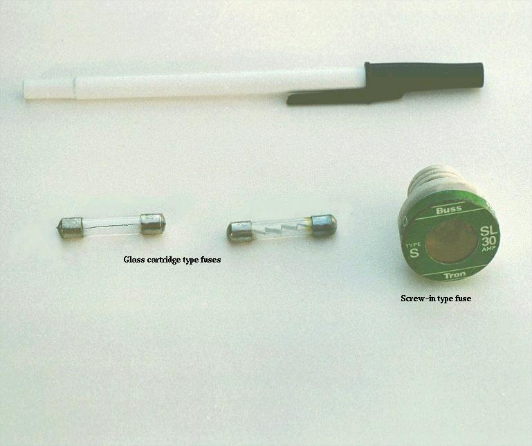
Los fusibles tipo cartucho son populares en aplicaciones automotrices y en aplicaciones industriales cuando se construyen con materiales de cubierta distintos al vidrio. Debido a que los fusibles están diseñados para "fallar" al abrirse cuando se excede su clasificación de corriente, generalmente están diseñados para reemplazarse fácilmente en un circuito. Esto significa que se insertarán en algún tipo de soporte en lugar de soldarse o atornillarse directamente a los conductores del circuito. La siguiente es una fotografía que muestra un par de fusibles de cartucho de vidrio en un portafusibles múltiples:
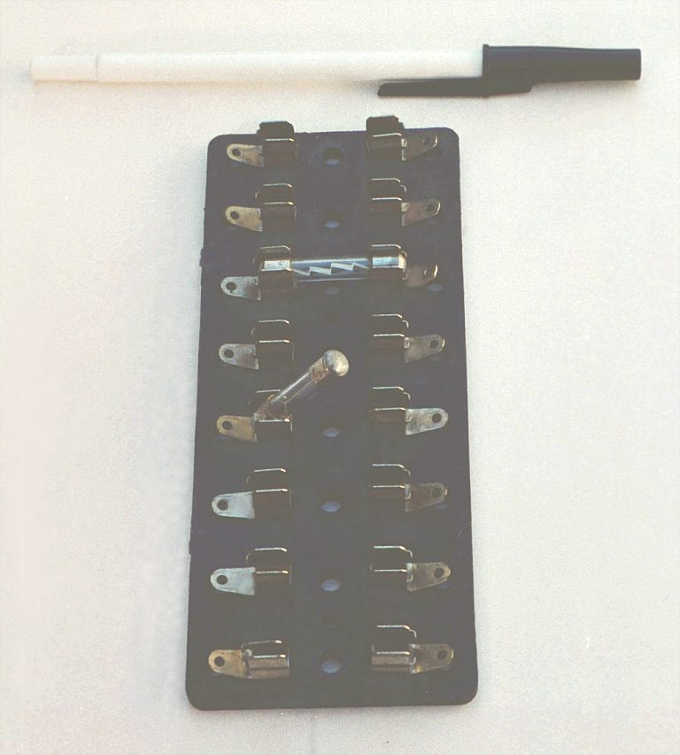
Los fusibles se sujetan mediante clips metálicos de resorte, y los propios clips están conectados permanentemente a los conductores del circuito. El material base del portafusibles (obloque de fusiblescomo a veces se les llama) se elige como un buen aislante.
Otro tipo de portafusibles para fusibles tipo cartucho se usa comúnmente para instalación en paneles de control de equipos, donde es deseable ocultar todos los puntos de contacto eléctrico del contacto humano. A diferencia del bloque de fusibles que se acaba de mostrar, donde todos los clips metálicos están expuestos abiertamente, este tipo de portafusibles encierra completamente el fusible en una carcasa aislante:
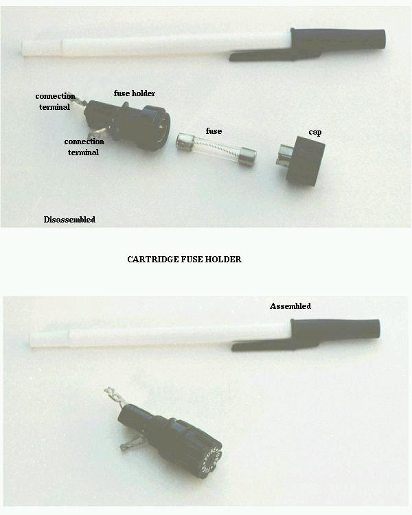
El dispositivo más común que se utiliza hoy en día para la protección contra sobrecorriente en circuitos de alta corriente es elcortacircuitos. Los disyuntores son interruptores especialmente diseñados que se abren automáticamente para detener la corriente en caso de una condición de sobrecorriente. Los disyuntores pequeños, como los utilizados en servicios residenciales, comerciales e industriales ligeros, funcionan térmicamente. Contienen untira bimetálica(una tira delgada de dos metales unidos espalda con espalda) que transporta corriente de circuito, que se dobla cuando se calienta. Cuando la tira bimetálica genera suficiente fuerza (debido al calentamiento por sobrecorriente de la tira), se activa el mecanismo de disparo y el disyuntor se abrirá. Los disyuntores más grandes se activan automáticamente por la fuerza del campo magnético producido por los conductores que transportan corriente dentro del disyuntor, o pueden activarse para dispararse mediante dispositivos externos que monitorean la corriente del circuito (dichos dispositivos se denominanrelés de protección).
Debido a que los disyuntores no fallan cuando se los somete a condiciones de sobrecorriente (más bien, simplemente se abren y se pueden volver a cerrar moviendo una palanca), es más probable que se encuentren conectados a un circuito de una manera más permanente que los fusibles. Aquí se muestra una fotografía de un pequeño disyuntor:
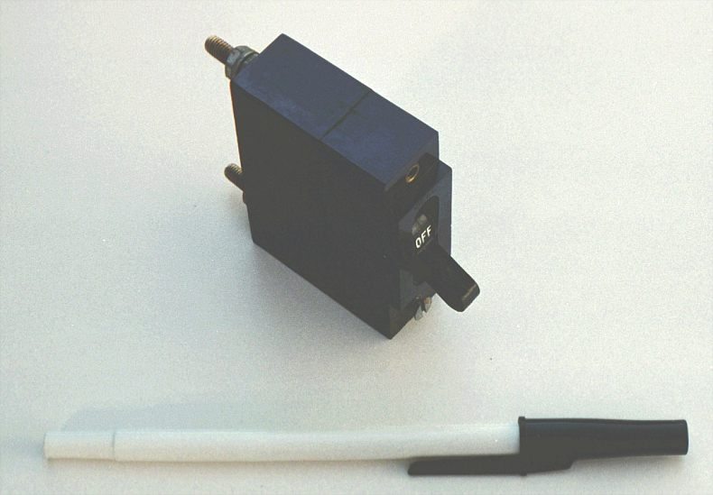
Desde el exterior, parece nada más que un interruptor. De hecho, podría usarse como tal. Sin embargo, su verdadera función es funcionar como dispositivo de protección contra sobrecorriente.
Cabe señalar que algunos automóviles utilizan dispositivos económicos conocidos comoenlaces fusiblespara protección contra sobrecorriente en el circuito de carga de la batería, debido al gasto de un fusible y un soporte con la clasificación adecuada. Un eslabón fusible es un fusible primitivo, que no es más que un trozo corto de cable aislado con goma diseñado para derretirse en caso de sobrecorriente, sin ningún tipo de revestimiento duro. Estos dispositivos toscos y potencialmente peligrosos nunca se utilizan en la industria o incluso en el uso de energía residencial, principalmente debido a los mayores niveles de voltaje y corriente encontrados. En lo que respecta a este autor, su aplicación incluso en circuitos de automoción es cuestionable.
El símbolo del dibujo del esquema eléctrico de un fusible es una curva en forma de S:
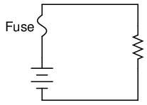
Los fusibles están clasificados principalmente, como era de esperar, en la unidad para corriente: amperios. Aunque su funcionamiento depende de la autogeneración de calor en condiciones de corriente excesiva mediante la propia resistencia eléctrica del fusible, están diseñados para aportar una cantidad insignificante de resistencia adicional a los circuitos que protegen. Esto se logra en gran medida haciendo que el cable del fusible sea lo más corto posible. Así como la ampacidad de un cable normal no está relacionada con su longitud (el cable de cobre sólido de calibre 10 soportará 40 amperios de corriente en el aire libre, independientemente de qué tan largo o corto sea el trozo), un cable fusible de cierto material y calibre se fundirá con una determinada corriente, sin importar qué tan largo sea. Dado que la longitud no es un factor en la clasificación de corriente, cuanto más corto se pueda hacer, menos resistencia tendrá de un extremo a otro.
Sin embargo, el diseñador de fusibles también debe considerar lo que sucede después de que se funde un fusible: los extremos fundidos del cable que alguna vez fue continuo estarán separados por un espacio de aire, con voltaje de suministro completo entre los extremos. Si el fusible no tiene la longitud suficiente en un circuito de alto voltaje, es posible que una chispa salte de uno de los extremos del cable derretido al otro, completando el circuito nuevamente:
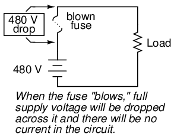
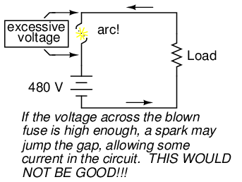
En consecuencia, los fusibles se clasifican en términos de su capacidad de voltaje así como del nivel de corriente al que se quemarán.
Algunos fusibles industriales grandes tienen elementos de alambre reemplazables para reducir el gasto. El cuerpo del fusible es un cartucho opaco y reutilizable que protege el cable del fusible de la exposición y protege los objetos circundantes del cable del fusible.
La clasificación de corriente de un fusible implica más que un solo número. Si se envía una corriente de 35 amperios a través de un fusible de 30 amperios, puede fundirse repentinamente o demorarse antes de fundirse, dependiendo de otros aspectos de su diseño. Algunos fusibles están pensados para fundirse muy rápido, mientras que otros están diseñados para tiempos de "apertura" más modestos, o incluso para una acción retardada según la aplicación. Estos últimos fusibles a veces se denominangolpe lentofusibles debido a sus características intencionales de retardo de tiempo.
Un ejemplo clásico de aplicación de fusibles de acción lenta es la protección de motores eléctricos, dondeirrupciónNormalmente se experimentan corrientes de hasta diez veces la corriente de funcionamiento normal cada vez que se arranca el motor desde un punto muerto. Si se utilizaran fusibles de fusión rápida en una aplicación como esta, el motor nunca podría arrancar porque los niveles normales de corriente de entrada quemarían los fusibles inmediatamente. El diseño de un fusible de fusión lenta es tal que el elemento fusible tiene más masa (pero no más ampacidad) que un fusible de fusión rápida equivalente, lo que significa que se calentará más lentamente (pero hasta la misma temperatura final) para cualquier cantidad de corriente dada.
En el otro extremo del espectro de acción de los fusibles se encuentran los llamadosfusibles semiconductoresDiseñado para abrirse muy rápidamente en caso de una condición de sobrecorriente. Los dispositivos semiconductores, como los transistores, tienden a ser especialmente intolerantes a las condiciones de sobrecorriente y, como tales, requieren una protección de acción rápida contra sobrecorrientes en aplicaciones de alta potencia.
Se supone que los fusibles siempre deben colocarse en el lado "caliente" de la carga en sistemas conectados a tierra. La intención de esto es que la carga quede completamente desenergizada en todos los aspectos después de que se abra el fusible. Para ver la diferencia entre fusionar el lado "caliente" y el lado "neutro" de una carga, compare estos dos circuitos:
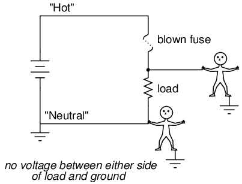
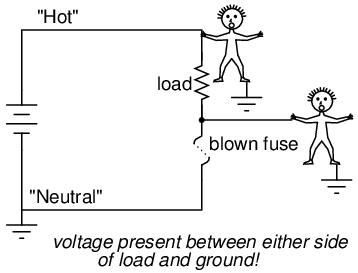
En cualquier caso, el fusible interrumpió con éxito la corriente a la carga, pero el circuito inferior no logra interrumpir el voltaje potencialmente peligroso desde ambos lados de la carga a tierra, donde podría estar parada una persona. El primer diseño de circuito es mucho más seguro.
Como se dijo antes, los fusibles no son el único tipo de dispositivo de protección contra sobrecorriente que se utiliza. Los dispositivos similares a interruptores llamados disyuntores se utilizan a menudo (y más comúnmente) para abrir circuitos con corriente excesiva, y su popularidad se debe al hecho de que no se destruyen a sí mismos en el proceso de romper el circuito como lo hacen los fusibles. Sin embargo, en cualquier caso, la colocación del dispositivo de protección contra sobrecorriente en un circuito seguirá las mismas pautas generales enumeradas anteriormente: es decir, "fusionar" el lado de la fuente de alimentación.notconectado a tierra.
Aunque la colocación de la protección contra sobrecorriente en un circuito puede determinar el riesgo relativo de descarga eléctrica de ese circuito bajo diversas condiciones, debe entenderse que dichos dispositivos nunca tuvieron la intención de proteger contra descargas eléctricas. Ni los fusibles ni los disyuntores fueron diseñados para abrirse en caso de que una persona sufriera una descarga eléctrica; más bien, están destinados a abrirse sólo en condiciones de posible sobrecalentamiento del conductor. Los dispositivos contra sobrecorriente protegen principalmente a los conductores de un circuito contra daños por sobretemperatura (y los riesgos de incendio asociados con conductores demasiado calientes) y, en segundo lugar, protegen piezas específicas de equipos como cargas y generadores (algunos fusibles de acción rápida están diseñados para proteger dispositivos electrónicos particularmente susceptibles a sobretensiones). Dado que los niveles de corriente necesarios para una descarga eléctrica o electrocución son mucho más bajos que los niveles de corriente normales de cargas eléctricas comunes, una condición de sobrecorriente no es indicativa de que se esté produciendo una descarga. Hay otros dispositivos diseñados para detectar ciertas condiciones de choque (los detectores de falla a tierra son los más populares), pero estos dispositivos sirven estrictamente para ese propósito y no están relacionados con la protección de los conductores contra el sobrecalentamiento.
- REVISAR:
- A fusibleEs un conductor pequeño y delgado diseñado para fundirse y separarse en dos pedazos con el fin de romper un circuito en caso de corriente excesiva.
- A cortacircuitosEs un interruptor especialmente diseñado que se abre automáticamente para interrumpir la corriente del circuito en caso de una condición de sobrecorriente. Pueden "dispararse" (abrirse) térmicamente, mediante campos magnéticos o mediante dispositivos externos llamados "relés de protección", según el diseño del interruptor, su tamaño y la aplicación.
- Los fusibles se clasifican principalmente en términos de corriente máxima, pero también en términos de cuánta caída de voltaje soportarán de manera segura después de interrumpir un circuito.
- Los fusibles pueden diseñarse para quemarse rápido, lento o en cualquier punto intermedio para el mismo nivel máximo de corriente.
- El mejor lugar para instalar un fusible en un sistema de energía conectado a tierra es en la ruta del conductor no conectado a tierra hacia la carga. De esa manera, cuando se funda el fusible, solo quedará el conductor a tierra (seguro) todavía conectado a la carga, lo que hará que sea más seguro para las personas cerca.
Specific resistance
La clasificación de ampacidad del conductor es una evaluación cruda de la resistencia basada en el potencial de la corriente para crear un riesgo de incendio. Sin embargo, podemos encontrarnos con situaciones en las que la caída de voltaje creada por la resistencia del cable en un circuito plantea preocupaciones distintas a la de evitar incendios. Por ejemplo, podemos estar diseñando un circuito donde el voltaje a través de un componente es crítico y no debe caer por debajo de cierto límite. Si este es el caso, las caídas de voltaje resultantes de la resistencia del cable pueden causar un problema de ingeniería mientras se encuentran dentro de los límites seguros (de incendio) de ampacidad:
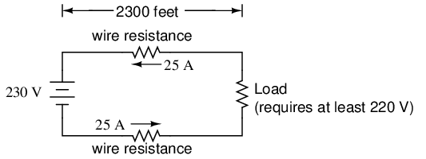
Si la carga en el circuito anterior no tolera menos de 220 voltios, dado un voltaje de fuente de 230 voltios, entonces será mejor que nos aseguremos de que el cableado no caiga más de 10 voltios en el camino. Contando los conductores de suministro y de retorno de este circuito, esto deja una caída máxima tolerable de 5 voltios a lo largo de cada cable. Usando la Ley de Ohm (R=E/I), podemos determinar la resistencia máxima permitida para cada trozo de cable:
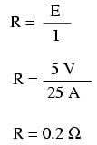
Sabemos que la longitud del cable es de 2300 pies para cada trozo de cable, pero ¿cómo determinamos la cantidad de resistencia para un tamaño y longitud de cable específicos? Para hacer eso, necesitamos otra fórmula:
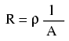
Esta fórmula relaciona la resistencia de un conductor con su resistencia específica (la letra griega "rho" (ρ), que se parece a una letra minúscula "p"), su longitud ("l") y su área de sección transversal ("A"). Observe que con la variable de longitud en la parte superior de la fracción, el valor de resistencia aumenta a medida que aumenta la longitud (analogía: es más difícil forzar el paso de líquido a través de una tubería larga que de una corta) y disminuye a medida que aumenta el área de la sección transversal (analogía: el líquido fluye más fácilmente a través de una tubería gruesa que a través de una delgada). La resistencia específica es una constante para el tipo de material conductor que se calcula.
Las resistencias específicas de varios materiales conductores se pueden encontrar en la siguiente tabla. Encontramos el cobre cerca del final de la tabla, solo superado por la plata por tener una baja resistencia específica (buena conductividad):
Tabla de resistencia específica: a continuación
Specific resistance at 20o C:
| Material | Elemento/Aleación | (ohmios-cmil/pies) | (ohmios-cm·10-6) |
|---|---|---|---|
| nicromo | Aleación | 675 | 112.2 |
| Nicromo V | Aleación | 650 | 108.1 |
| manganina | Aleación | 290 | 48.21 |
| Constantán | Aleación | 272.97 | 45.38 |
| Acero* | Aleación | 100 | 16.62 |
| Platino | Elemento | 63.16 | 10.5 |
| Hierro | Elemento | 57.81 | 9.61 |
| Níquel | Elemento | 41.69 | 6.93 |
| Zinc | Elemento | 35.49 | 5.90 |
| Molibdeno | Elemento | 32.12 | 5.34 |
| Tungsteno | Elemento | 31.76 | 5.28 |
| Aluminio | Elemento | 15.94 | 2.650 |
| Oro | Elemento | 13.32 | 2.214 |
| Cobre | Elemento | 10.09 | 1.678 |
| Plata | Elemento | 9.546 | 1.587 |
| * = Acero aleación con 99,5 % hierro, 0,5 % carbono |
Observe que las cifras de resistencia específica en la tabla anterior se dan en la unidad muy extraña de "ohmios-cmil/pie" (Ω-cmil/pie). Esta unidad indica qué unidades se espera que usemos en la fórmula de resistencia (R=ρl/A). En este caso, estas cifras de resistencia específica deben usarse cuando la longitud se mide en pies y el área de la sección transversal se mide en milésimas de pulgada circulares.
La unidad métrica para la resistencia específica es el ohmímetro (Ω-m), o el ohmio-centímetro (Ω-cm), con 1,66243 x 10-9Ω-metros por Ω-cmil/pie (1,66243 x 10-7Ω-cm por Ω-cmil/pie). En la columna Ω-cm de la tabla, las cifras en realidad están escaladas como µΩ-cm debido a sus magnitudes muy pequeñas. Por ejemplo, el hierro aparece como 9,61 µΩ-cm, lo que podría representarse como 9,61 x 10-6Ω-cm.
Cuando se utiliza la unidad de Ω-metro para resistencia específica en la fórmula R=ρl/A, la longitud debe estar en metros y el área en metros cuadrados. Cuando se utiliza la unidad de Ω-centímetro (Ω-cm) en la misma fórmula, la longitud debe estar en centímetros y el área en centímetros cuadrados.
Todas estas unidades de resistencia específica son válidas para cualquier material (Ω-cmil/ft, Ω-m o Ω-cm). Sin embargo, se podría preferir usar Ω-cmil/pie cuando se trata de alambre redondo donde el área de la sección transversal ya se conoce en mils circulares. Por el contrario, cuando se trata de barras colectoras de formas irregulares o barras colectoras personalizadas recortadas de metal, donde solo se conocen las dimensiones lineales de longitud, ancho y altura, las unidades de resistencia específicas de Ω-metro o Ω-cm pueden ser más apropiadas.
Volviendo a nuestro circuito de ejemplo, buscábamos un cable que tuviera 0,2 Ω o menos de resistencia en una longitud de 2300 pies. Suponiendo que vamos a utilizar alambre de cobre (el tipo más común de alambre eléctrico fabricado), podemos configurar nuestra fórmula como tal:
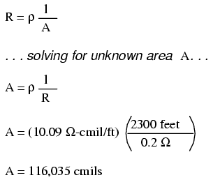
Resolviendo algebraicamente A, obtenemos un valor de 116,035 mils circulares. Haciendo referencia a nuestra tabla de tamaños de cables sólidos, encontramos que el cable "doble-deber" (2/0) con 133,100 cmils es adecuado, mientras que el siguiente tamaño más bajo, "simple-deber" (1/0), con 105,500 cmils es demasiado pequeño. Tenga en cuenta que la corriente de nuestro circuito es de unos modestos 25 amperios. Según nuestra tabla de ampacidad para alambre de cobre al aire libre, un alambre de calibre 14 habría sido suficiente (en la medida de lo posible).notse trata de provocar un incendio). Sin embargo, desde el punto de vista de la caída de voltaje, un cable de calibre 14 habría sido muy inaceptable.
Sólo por diversión, veamos qué habría hecho un cable de calibre 14 en el rendimiento de nuestro circuito de alimentación. Al observar nuestra tabla de tamaños de cables, encontramos que el cable de calibre 14 tiene un área de sección transversal de 4107 mils circulares. Si todavía utilizamos cobre como material de alambre (una buena opción, a menos que estemosen realidad¡es rico y puede permitirse 4600 pies de alambre de plata de calibre 14!), entonces nuestra resistencia específica seguirá siendo 10.09 Ω-cmil/pie:
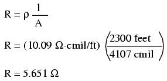
Recuerde que esto es 5.651 Ω por 2300 pies de alambre de cobre calibre 14, y que tenemos dos tramos de 2300 pies en todo el circuito, por lo quecadaEl trozo de cable en el circuito tiene 5.651 Ω de resistencia:
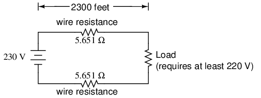
La resistencia total de los cables de nuestro circuito es 2 veces 5,651 o 11,301 Ω. Desafortunadamente, esto esfardemasiada resistencia para permitir 25 amperios de corriente con una fuente de voltaje de 230 voltios. Incluso si nuestra resistencia de carga fuera 0 Ω, nuestra resistencia de cableado de 11,301 Ω restringiría la corriente del circuito a tan solo 20,352 amperios. Como puede ver, una "pequeña" cantidad de resistencia del cable puede marcar una gran diferencia en el rendimiento del circuito, especialmente en circuitos de potencia donde las corrientes son mucho más altas que las que normalmente se encuentran en los circuitos electrónicos.
Hagamos un ejemplo de problema de resistencia para un trozo de barra colectora cortada a medida. Supongamos que tenemos un trozo de barra de aluminio sólida, de 4 centímetros de ancho por 3 centímetros de alto por 125 centímetros de largo, y deseamos calcular la resistencia de un extremo a otro a lo largo de la dimensión larga (125 cm). Primero, necesitaríamos determinar el área de la sección transversal de la barra:
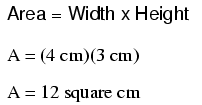
También necesitamos conocer la resistencia específica del aluminio, en la unidad adecuada para esta aplicación (Ω-cm). De nuestra tabla de resistencias específicas, vemos que esto es 2,65 x 10-6Ω-cm. Configurando nuestra fórmula R=ρl/A, tenemos:
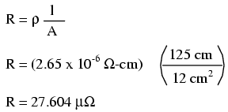
Como puede ver, el gran espesor de una barra colectora hace quemuyResistencias bajas en comparación con los tamaños de cables estándar, incluso cuando se utiliza un material con una mayor resistencia específica.
El procedimiento para determinar la resistencia de las barras colectoras no es fundamentalmente diferente al de determinar la resistencia de los cables redondos. Sólo necesitamos asegurarnos de que el área de la sección transversal se calcule correctamente y que todas las unidades se correspondan entre sí como deberían.
- REVISAR:
- La resistencia del conductor aumenta al aumentar la longitud y disminuye al aumentar el área de la sección transversal, siendo todos los demás factores iguales.
- Resistencia específica("ρ") es una propiedad de cualquier material conductor, una cifra que se utiliza para determinar la resistencia de un extremo a otro de un conductor dada la longitud y el área en esta fórmula: R = ρl/A
- La resistencia específica de los materiales se da en unidades de Ω-cmil/pie o Ω-metros (métrico). El factor de conversión entre estas dos unidades es 1,66243 x 10-9Ω-metros por Ω-cmil/pie, o 1,66243 x 10-7Ω-cm por Ω-cmil/pie.
- Si la caída de voltaje del cableado en un circuito es crítica, se deben realizar cálculos exactos de resistencia de los cables antes de elegir el tamaño del cable.
Coeficiente de temperatura de la resistencia
Es posible que hayas notado en la tabla de resistencias específicas que todas las cifras se especificaron a una temperatura de 20oCelsius. Si sospechaba que esto significaba que la resistencia específica de un material puede cambiar con la temperatura, ¡tenía razón!
Los valores de resistencia para conductores a cualquier temperatura distinta de la temperatura estándar (generalmente especificada en 20 Celsius) en la tabla de resistencia específica deben determinarse mediante otra fórmula más:
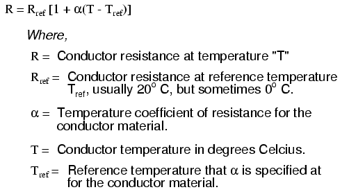
La constante "alfa" (α) se conoce comocoeficiente de temperatura de resistencia, y simboliza el factor de cambio de resistencia por grado de cambio de temperatura. Así como todos los materiales tienen una determinada resistencia específica (a 20oC), ellos tambiéncambiarResistencia según la temperatura en ciertas cantidades. Para metales puros, este coeficiente es un número positivo, lo que significa que la resistenciaaumentacon el aumento de la temperatura. Para los elementos carbono, silicio y germanio, este coeficiente es un número negativo, lo que significa que la resistenciadisminuyecon el aumento de la temperatura. Para algunas aleaciones metálicas, el coeficiente de resistencia a la temperatura es muy cercano a cero, lo que significa que la resistencia apenas cambia con las variaciones de temperatura (¡una buena propiedad si desea construir una resistencia de precisión con alambre metálico!). La siguiente tabla proporciona los coeficientes de resistencia a la temperatura para varios metales comunes, tanto puros como aleados:
Tabla de coeficientes de temperatura: a continuación
Temperature coefficient (α) per degree C:
| Material | Elemento/Aleación | Temperatura. coeficiente |
|---|---|---|
| Níquel | Elemento | 0.005866 |
| Hierro | Elemento | 0.005671 |
| Molibdeno | Elemento | 0.004579 |
| Tungsteno | Elemento | 0.004403 |
| Aluminio | Elemento | 0.004308 |
| Cobre | Elemento | 0.004041 |
| Plata | Elemento | 0.003819 |
| Platino | Elemento | 0.003729 |
| Oro | Elemento | 0.003715 |
| Zinc | Elemento | 0.003847 |
| Acero* | Aleación | 0.003 |
| nicromo | Aleación | 0.00017 |
| Nicromo V | Aleación | 0.00013 |
| manganina | Aleación | 0.000015 |
| Constantán | Aleación | ±0.000074 |
| * = Aleación de acero S con 99,5 % hierro, 0,5 % carbono |
Echemos un vistazo a un circuito de ejemplo para ver cómo la temperatura puede afectar la resistencia del cable y, en consecuencia, el rendimiento del circuito:
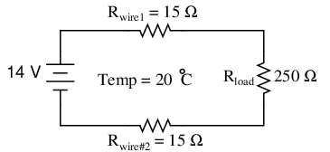
Este circuito tiene una resistencia total de los cables (cable 1 + cable 2) de 30 Ω a temperatura estándar. Configurando una tabla de valores de voltaje, corriente y resistencia obtenemos:
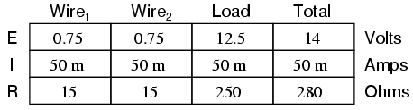
a los 20oCelsius, obtenemos 12,5 voltios a través de la carga y un total de 1,5 voltios (0,75 + 0,75) caídos a través de la resistencia del cable. Si la temperatura subiera a 35oCelsius, podríamos determinar fácilmente el cambio de resistencia de cada trozo de cable. Suponiendo el uso de alambre de cobre (α = 0,004041) obtenemos:
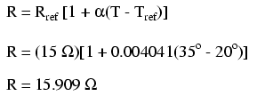
Recalculando los valores de nuestro circuito, vemos qué cambios traerá este aumento de temperatura:
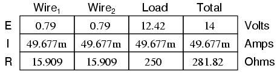
Como puede ver, el voltaje a través de la carga disminuyó (de 12,5 voltios a 12,42 voltios) y la caída de voltaje a través de los cables aumentó (de 0,75 voltios a 0,79 voltios) como resultado del aumento de temperatura. Aunque los cambios pueden parecer pequeños, pueden ser significativos para las líneas eléctricas que se extienden por kilómetros entre las plantas de energía y las subestaciones, subestaciones y cargas. De hecho, las empresas de servicios públicos a menudo tienen que tener en cuenta los cambios de resistencia de la línea resultantes de las variaciones estacionales de temperatura al calcular la carga permitida del sistema.
- REVISAR:
- La mayoría de los materiales conductores cambian su resistencia específica con los cambios de temperatura. Esta es la razón por la que las cifras de resistencia específica siempre se especifican a una temperatura estándar (normalmente 20oo 25oCelsius).
- El factor de cambio de resistencia por grado Celsius de cambio de temperatura se llamacoeficiente de temperatura de resistencia. Este factor está representado por la letra minúscula griega "alfa" (α).
- Un coeficiente positivo para un material significa que su resistencia aumenta con el aumento de temperatura. Los metales puros suelen tener coeficientes de resistencia a la temperatura positivos. Se pueden obtener coeficientes cercanos a cero aleando ciertos metales.
- Un coeficiente negativo para un material significa que su resistencia disminuye con el aumento de temperatura. Los materiales semiconductores (carbono, silicio, germanio) suelen tener coeficientes de resistencia a la temperatura negativos.
- La fórmula utilizada para determinar la resistencia de un conductor a alguna temperatura distinta a la especificada en una tabla de resistencia es la siguiente:
Superconductivity
Los conductores pierden toda su resistencia eléctrica cuando se enfrían a temperaturas muy bajas (cerca del cero absoluto, aproximadamente -273oCelsius). Debe entenderse que la superconductividad no es simplemente una extrapolación de la tendencia de la mayoría de los conductores a perder gradualmente resistencia al disminuir la temperatura; más bien, es un salto cuántico repentino en la resistividad de lo finito a nada.Un material superconductor tiene una resistencia eléctrica absolutamente nula, no sólo una pequeña cantidad..
La superconductividad fue descubierta por primera vez por H. Kamerlingh Onnes en la Universidad de Leiden, Países Bajos, en 1911. Apenas tres años antes, en 1908, Onnes había desarrollado un método para licuar gas helio, que proporcionaba un medio con el cual sobreenfriar objetos experimentales a sólo unos pocos grados por encima del cero absoluto. Al decidir investigar los cambios en la resistencia eléctrica del mercurio cuando se enfriaba a esta temperatura tan baja, descubrió que su resistencia caía anadajusto por debajo del punto de ebullición del helio.
Existe cierto debate sobre exactamente cómo y por qué los materiales superconductores son superconductores. Una teoría sostiene que los electrones se agrupan y viajan en pares (llamadospares de cobre) dentro de un superconductor en lugar de viajar de forma independiente, y eso tiene algo que ver con su flujo sin fricción. Curiosamente, otro fenómeno de temperaturas extremadamente frías,superfluidez, sucede con ciertos líquidos (especialmente el helio líquido), lo que da como resultado un flujo de moléculas sin fricción.
La superconductividad promete capacidades extraordinarias para los circuitos eléctricos. Si se pudiera eliminar por completo la resistencia de los conductores, no habría pérdidas de energía ni ineficiencias en los sistemas de energía eléctrica debido a resistencias parásitas. Los motores eléctricos podrían hacerse casi perfectamente eficientes (100%). Componentes como condensadores e inductores, cuyas características ideales normalmente se ven perjudicadas por las resistencias inherentes de los cables, podrían convertirse en ideales en un sentido práctico. Ya se han desarrollado algunos conductores, motores y condensadores superconductores prácticos, pero su uso en la actualidad es limitado debido a los problemas prácticos intrínsecos al mantenimiento de temperaturas súper frías.
La temperatura umbral para que un superconductor cambie de conducción normal a superconductividad se llama temperaturatemperatura de transición. Las temperaturas de transición para los superconductores "clásicos" están en el rango criogénico (cerca del cero absoluto), pero se ha avanzado mucho en el desarrollo de superconductores de "alta temperatura" que superconducen a temperaturas más cálidas. Un tipo es una mezcla cerámica de itrio, bario, cobre y oxígeno que cambia a una temperatura relativamente suave -160.oCelsius. Idealmente, un superconductor debería poder funcionar dentro del rango de temperaturas ambiente, o al menos dentro del rango de equipos de refrigeración económicos.
En esta tabla se muestran las temperaturas críticas para algunas sustancias comunes. Las temperaturas se dan en kelvin, que tiene el mismo intervalo incremental que los grados Celsius (un aumento o disminución de 1 kelvin es la misma cantidad de cambio de temperatura que 1oCelsius), solo compensado de modo que 0 K sea el cero absoluto. De esta manera no tendremos que lidiar con muchas cifras negativas.
Temperatura crítica, superconductores. a continuación
Critical temperatures given in Kelvins
| Material | Elemento o aleación | Temperatura crítica (K) |
|---|---|---|
| Aluminio | Elemento | 1.20 |
| Cadmio | Elemento | 0.56 |
| Dirigir | Elemento | 7.2 |
| Mercurio | Elemento | 4.16 |
| Niobio | Elemento | 8.70 |
| Torio | Elemento | 1.37 |
| Tin | Elemento | 3.72 |
| Titanio | Elemento | 0.39 |
| Uranio | Elemento | 1.0 |
| Zinc | Elemento | 0.91 |
| Niobio/Estaño | Aleación | 18.1 |
| sulfuro cúprico | Compuesto | 1.6 |
Los materiales superconductores también interactúan de formas interesantes con los campos magnéticos. Mientras se encuentra en estado superconductor, un material superconductor tenderá a excluir todos los campos magnéticos, un fenómeno conocido comoefecto Meissner. Sin embargo, si la intensidad del campo magnético se intensifica más allá de un nivel crítico, el material superconductor dejará de ser superconductor. En otras palabras, los materiales superconductores perderán su superconductividad (sin importar qué tan fríos los hagas) si se exponen a un campo magnético demasiado fuerte. De hecho, la presencia deanyEl campo magnético tiende a reducir la temperatura crítica de cualquier material superconductor: cuanto más campo magnético esté presente, más frío tendrá que enfriar el material antes de que se vuelva superconductor.
Ésta es otra limitación práctica de los superconductores en el diseño de circuitos, ya que la corriente eléctrica a través de cualquier conductor produce un campo magnético. Aunque un cable superconductor tendría resistencia cero para oponerse a la corriente, todavía habrá unalímitede cuánta corriente prácticamente podría pasar a través de ese cable debido a su límite crítico de campo magnético.
Ya existen algunas aplicaciones industriales de los superconductores, especialmente desde la reciente aparición (1987) de la cerámica de itrio-bario-cobre-oxígeno, que sólo requiere nitrógeno líquido para enfriarse, a diferencia del helio líquido. Incluso es posible pedir kits de superconductividad a proveedores educativos que pueden funcionar en laboratorios de escuelas secundarias (nitrógeno líquido no incluido). Normalmente, estos kits exhiben superconductividad por el efecto Meissner, suspendiendo un pequeño imán en el aire sobre un disco superconductor enfriado por un baño de nitrógeno líquido.
La resistencia nula que ofrecen los circuitos superconductores tiene consecuencias únicas. ¡En un cortocircuito superconductor, es posible mantener grandes corrientes indefinidamente con voltaje aplicado cero!
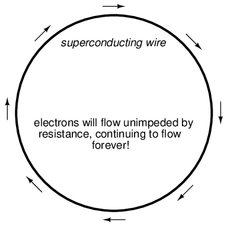
Se ha demostrado experimentalmente que los anillos de material superconductor mantienen una corriente continua durante años sin aplicar voltaje. Hasta donde todo el mundo sabe, no existe un límite de tiempo teórico sobre cuánto tiempo podría mantenerse una corriente sin ayuda en un circuito superconductor. Si estás pensando que esto parece ser una forma demovimiento perpetuo¡Tienes razón! Contrariamente a la creencia popular, no existe ninguna ley de la física que prohíba el movimiento perpetuo; más bien, la prohibición se opone a cualquier máquina o sistema que genere más energía de la que consume (lo que se denominaría unasobreunidaddispositivo). En el mejor de los casos, para lo único que serviría una máquina de movimiento perpetuo (como el anillo superconductor) es paraalmacenarenergía, nogenerar¡Libremente!
Los superconductores también ofrecen algunas posibilidades extrañas que no tienen nada que ver con la Ley de Ohm. Una de esas posibilidades es la construcción de un dispositivo llamado Josephson Junction, que actúa como una especie de relé, controlando una corriente con otra (sin partes móviles, por supuesto). El pequeño tamaño y el rápido tiempo de conmutación de Josephson Junctions pueden conducir a nuevos diseños de circuitos informáticos: una alternativa al uso de transistores semiconductores.
- REVISAR:
- Los superconductores son materiales que tienen una resistencia eléctrica absolutamente nula.
- Todos los materiales superconductores conocidos actualmente deben enfriarse muy por debajo de la temperatura ambiente para convertirse en superconductores. La temperatura máxima a la que lo hacen se llamatemperatura de transición.
Tensión de ruptura de aisladores
Los átomos de los materiales aislantes tienen electrones muy unidos, lo que resiste muy bien el flujo libre de electrones. Sin embargo, los aisladores no pueden resistir cantidades indefinidas de voltaje. Con suficiente voltaje aplicado,anyEl material aislante eventualmente sucumbirá a la "presión" eléctrica y se producirá un flujo de electrones. Sin embargo, a diferencia de la situación con los conductores donde la corriente es proporcional al voltaje aplicado (dada una resistencia fija), la corriente a través de un aislante es bastante no lineal: para voltajes por debajo de un cierto nivel umbral, prácticamente no fluirá ningún electrón, pero si el voltaje excede ese umbral, habrá una avalancha de corriente.
Una vez que la corriente es forzada a través de un material aislante,descomponerde la estructura molecular de ese material ha ocurrido. Después de la ruptura, el material puede o no comportarse más como aislante, ya que la estructura molecular ha sido alterada por la ruptura. Generalmente hay una "punción" localizada en el medio aislante por donde fluyeron los electrones durante la ruptura.
El espesor de un material aislante juega un papel en la determinación de su voltaje de ruptura, también conocido comorigidez dieléctrica. La rigidez dieléctrica específica a veces se indica en términos de voltios por mil (1/1000 de pulgada) o kilovoltios por pulgada (las dos unidades son equivalentes), pero en la práctica se ha descubierto que la relación entre el voltaje de ruptura y el espesor no es exactamente lineal. Un aislante tres veces más grueso tiene una rigidez dieléctrica ligeramente inferior a 3 veces mayor. Sin embargo, para un uso aproximado, las clasificaciones de voltios por espesor están bien.
Rigidez dieléctrica: a continuación
Dielectric strength in kilovolts per inch (kV/in):
| Material* | Rigidez dieléctrica |
|---|---|
| Vacío | 20 |
| Air | 20 to 75 |
| Porcelana | 40 to 200 |
| Parafina | 200 to 300 |
| Aceite para transformadores | 400 |
| Baquelita | 300 to 550 |
| Goma | 450 to 700 |
| Goma laca | 900 |
| Papel | 1250 |
| teflón | 1500 |
| Vaso | 2000 to 3000 |
| Mica | 5000 |
* = Los materiales enumerados están especialmente preparados para uso eléctrico,anterior.
- REVISAR:
- Con un voltaje aplicado lo suficientemente alto, los electrones pueden liberarse de los átomos de los materiales aislantes, lo que da como resultado una corriente a través de ese material.
- El voltaje mínimo requerido para "violar" un aislante forzando la corriente a través de él se llama voltajevoltaje de ruptura, origidez dieléctrica.
- Cuanto más gruesa sea una pieza de material aislante, mayor será el voltaje de ruptura, siendo todos los demás factores iguales.
- La rigidez dieléctrica específica generalmente se clasifica en una de dos unidades equivalentes: voltios por mil o kilovoltios por pulgada.
Datos
Las tablas de resistencia específica y coeficiente de resistencia a la temperatura para materiales elementales (no aleaciones) se derivaron de cifras encontradas en el 78thedición de laManual CRC de química y física.
Tabla de temperaturas críticas de superconductores derivadas de cifras encontradas en el 21stvolumen deEnciclopedia de Collier, 1968.
Colaboradores
Los contribuyentes a este capítulo se enumeran en orden cronológico de sus contribuciones, desde el más reciente hasta el primero. Consulte el Apéndice 2 (Lista de colaboradores) para fechas e información de contacto.
Aarón Forster(18 de febrero de 2003): Corrección de error tipográfico.
Jason Stark(Junio de 2000): Formato de documentos HTML, que dio lugar a una segunda edición mucho más atractiva.
Lecciones en circuitos eléctricoscopyright (C) 2000-2023 Tony R. Kuphaldt, según los términos y condiciones delCC BY License.